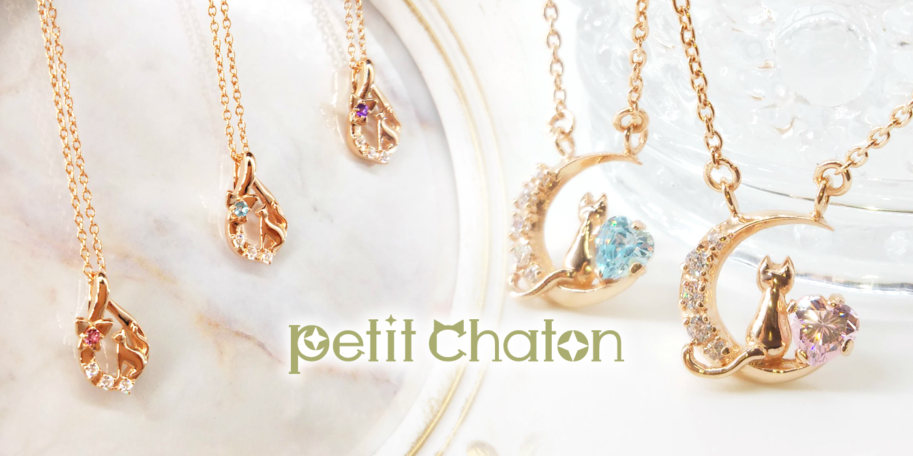
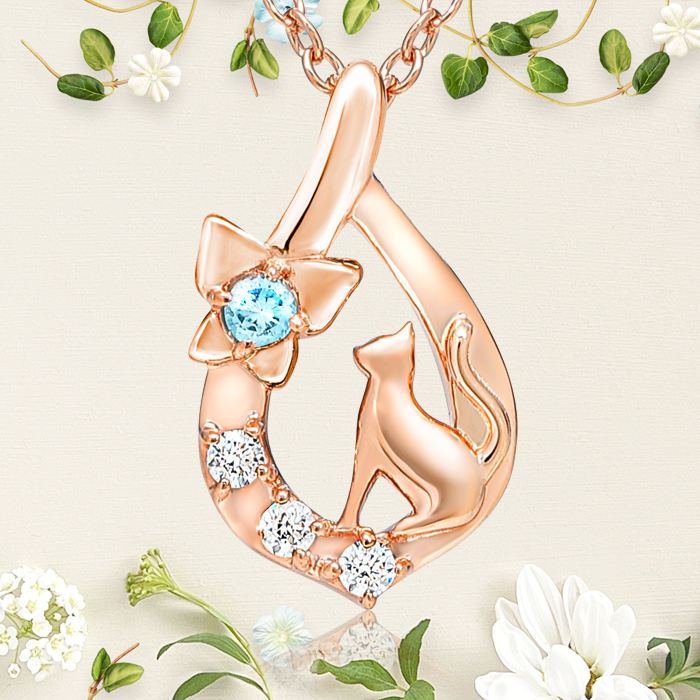
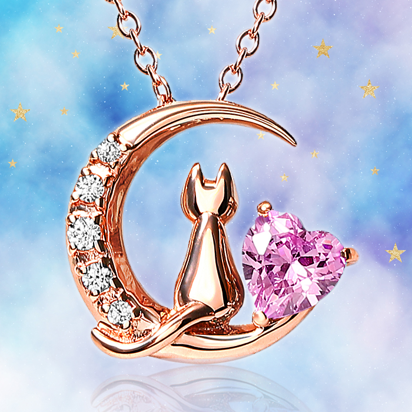

Vue / Vite の SPA（CSR）
- 本文がJS依存。SNS・一部クローラが内容を読めない
<html lang="en">（日本語サイトなのに英語指定）- h1 が 0 個・見出しが h3 から始まる
- meta description / OGP / Twitter Card なし
- robots.txt・sitemap.xml 実質不在／soft-404
- 画像に width/height がなく表示がガタつく（CLS 0.95）
- 1ページLPにSPA＝所有者が自分で保守できない
Case Study — Site Replatform
実際に公開・運用されているジュエリーブランドのサイトを、見た目を変えずに作り直した事例です。学習目的で Vue/Vite の SPA（クライアントサイドレンダリング）で作られていたサイトは、1ページのブランドLPに対して構成が重く、所有者が自分で保守できない状態でした。デザインを1px単位で踏襲したまま、中身を完全な静的HTMLへ置き換え、表示崩れ・SEO・速度・保守性・ホスティングをまとめて立て直しました。
Overview
対象は、猫モチーフのジュエリーブランドの1ページ構成のサイト。初期HTMLは <div id="app"></div> の空シェルで、本文はすべて JavaScript が描画する SPA（CSR） でした。軽量ではあったものの、本文がHTMLに存在しないため 検索エンジンやSNSのクローラが内容を読めず、見出し構造や lang・OGP などの基本も欠けていました。そして何より、1ページのLPにビルドを伴うSPAという過剰な構成のため、所有者がもう自分で更新できなくなっていました。
方針は「デザインは1pxも変えない／中身を作り直す」。リニューアルというと見た目を一新しがちですが、このブランドの世界観は完成していたので、あえて見た目を完全保存し、土台だけを現代的な静的サイトへ載せ替えました。作業は2段階に分け、まず「小さな修正だけでどこまで改善するか」を実演し、続いて「全面再構築でどこまで到達できるか」を示しています。
Vue/Vite の SPA。本文がJS依存・h1なし・lang誤り・OGPなし・robots/sitemap不在。表示時に画像がガタつく（CLS 0.95）。所有者が保守不能。
Vue本体に触れず、<head> と静的ファイル追加だけで改善。lang・description・OGP・favicon・robots.txt・sitemap を整備。SEO 91→100。
Astro（SSG）で完全な静的HTMLへ再構築。CSR撤廃・h1新設・構造化データ・画像最適化で速度と保守性を確立。Performance 62→97、CLS→0。
Before / After
見た目は据え置き。下のリストはすべて、ユーザーには見えにくいが集客・保守・信頼に効く部分です。
Vue / Vite の SPA（CSR）
<html lang="en">（日本語サイトなのに英語指定）Astro による完全な静的HTML（SSG）
lang="ja"＋セマンティックな見出し構造へMeasured — Real Numbers
Lighthouse（モバイル）での実測。Before＝公開中だった旧サイト、After＝本番相当ビルドのローカル計測（2026-06-14）。
Performance
62→97
CSR撤廃・画像最適化で大幅改善
Accessibility
92→100
lang・見出し・alt・コントラスト
Best Practices
100
据え置きで満点を維持
SEO
91→100
静的HTML・構造化・sitemap
| カテゴリ | 現状（Vue SPA） | Stage 1（小修正） | Stage 2（静的） |
|---|---|---|---|
| Performance | 62 | 67 | 97 |
| Accessibility | 92 | 92 | 100 |
| Best Practices | 100 | 100 | 100 |
| SEO | 91 | 100 | 100 |
| 指標 | Before | After |
|---|---|---|
| FCP（初回描画） | 2.1s | 1.5s |
| LCP（主要描画） | 3.8s | 2.5s |
| CLS（表示の安定性） | 0.95 | 0（全画像に width/height） |
| TBT（操作ブロック） | 0ms | 0ms |
What changed
見た目を変えずに、一つひとつの変更が「検索・共有・保守・体感速度」にどう効くかをセットで設計しました。
| 課題 | 改修（After で行ったこと） | 効果 |
|---|---|---|
| 本文がJSでしか出ない（CSR） | Astro(SSG) で本文を静的HTML化 | 検索エンジン・SNSのクローラが確実に内容を読める |
| lang が en・h1 が無い | lang="ja"＋h1新設で h1→h2→h3 に | 読み上げ・検索の文脈理解が正しくなる |
| OGP / Twitter Card 無し | OGP・Twitter Card・canonical・JSON-LD を整備 | SNS共有でサムネと説明が出て、クリックされやすい |
| robots.txt・sitemap 不在 | robots.txt＋sitemap を静的内包 | 検索エンジンが巡回・登録しやすくなる |
| 表示がガタつく（CLS 0.95） | 全画像に width/height を指定 | 読み込み中のレイアウト崩れが消える（CLS 0） |
| 画像が単一形式 | <picture> で avif→webp→jpg 出し分け | 対応ブラウザで軽い形式を配信し体感が速い |
| 未使用フォントを2重読込 | 重複@importを解消し使用フォントのみに | 描画ブロックを減らし初期表示を軽く |
| 淡いオリーブ文字が低コントラスト | 文字色を #ABAC70→#6f7038（AA合格）に | 読みやすさと配慮を確保（色味の印象は維持） |
| 1ページLPにSPA（保守不能） | 素のCSSの静的サイトへ（依存最小） | 所有者でも更新でき、長く維持できる |
Stack & Hosting
再構築は Astro 6（SSG）＋素のCSS（Tailwind 等のフレームワーク不使用で依存を最小化し、保守を容易に）。画像はビルド済みの avif・webp・jpg を <picture> で出し分けています。サイトマップは @astrojs/sitemap で自動生成。
ホスティングも併せて見直し、Firebase Hosting＋Cloudflare から GitHub Pages へ移行しました。GitHub へ push すると GitHub Actions が自動でビルド・デプロイする構成です。独自ドメインはDNSのAレコードを GitHub Pages に向け替え、メール（MXレコード）は一切変更せず保全。HTTPS証明書は GitHub Pages が自動発行します。
Design — Preserved
下はリニューアル後の実画面です。ブランドの世界観はそのまま。変えたのは中身だけ、という事例の主旨を示すために掲載しています。



架空サンプルではなく、公開・運用中のサイトでの実作業の記録です。公開中のサイトをご覧ください。